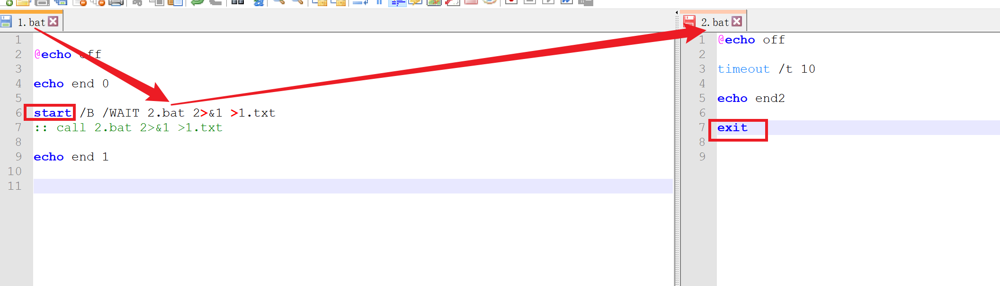
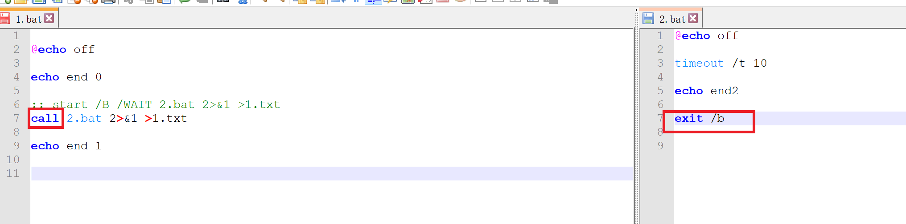

2023-02-20
call
修改于: 2023-02-20从批处理程序调用另一个批处理程序:
CALL [drive:][path]filename [batch-parameters] batch-parameters 指定批处理程序所需的命令行信息。
如果命令扩展被启用，CALL 会如下改变:
CALL 命令现在将卷标当作 CALL 的目标接受。语法是:
CALL:label arguments
一个新的批文件上下文由指定的参数所创建，控制在卷标被指定后传递到语句。 你必须通过达到批脚本文件末两次来 "exit" 两次。 第一次读到文件末时，控制会回到 CALL 语句的紧后面。 第二次会退出批脚本。 键入 GOTO /?，参看 GOTO :EOF 扩展的描述，此描述允许你从一个批脚本返回。
另外，批脚本文本参数参照(%0、%1、等等)已如下改变:
批脚本里的 %* 指出所有的参数(如 %1 %2 %3 %4 %5 ...)
批参数(%n)的替代已被增强。你可以使用以下语法:
%~1 - 删除引号(")，扩展 %1
%~f1 - 将 %1 扩展到一个完全合格的路径名
%~d1 - 仅将 %1 扩展到一个驱动器号
%~p1 - 仅将 %1 扩展到一个路径
%~n1 - 仅将 %1 扩展到一个文件名
%~x1 - 仅将 %1 扩展到一个文件扩展名
%~s1 - 扩展的路径只含有短名
%~a1 - 将 %1 扩展到文件属性
%~t1 - 将 %1 扩展到文件的日期/时间
%~z1 - 将 %1 扩展到文件的大小
%~$PATH:1 - 查找列在 PATH 环境变量的目录，并将 %1
扩展到找到的第一个完全合格的名称。如果
环境变量名未被定义，或者没有找到文件，
此修改符会扩展到空字符串
可以组合修改符来取得多重结果:
%~dp1 - 只将 %1 扩展到驱动器号和路径
%~nx1 - 只将 %1 扩展到文件名和扩展名
%~dp$PATH:1 - 在列在 PATH 环境变量中的目录里查找 %1，
并扩展到找到的第一个文件的驱动器号和路径。
%~ftza1 - 将 %1 扩展到类似 DIR 的输出行。
在上面的例子中，%1 和 PATH 可以被其他有效数值替换。 %~ 语法被一个有效参数号码终止。%~ 修定符不能跟 %* 使用
此处提一下与 start 的区别:
- start的调用需要在调用的bat脚本内写入 exit 才能正常返回当前bat指令
- call 的退出有没有 exit /b 即可, 默认就是这个
如, 1.bat 调用 2.bat , 使用 start:

使用 call:

输出都是:
C:\Users\烟雀\Desktop\some\t\_>1.bat end 0 end 1 C:\Users\烟雀\Desktop\some\t\_>
使用call时, 在 2.bat 使用 exit 会退出整个程序, 因为, call 是在一个批处理中直接调用另一个批处理, 不会打开新的窗口.
而 start 是新开一个窗口, 所以需要在新开的窗口手动 exit 退出.
要处理call执行子脚本退出父脚本可以使用:
goto :eof
来替代, 表示转到文件末尾